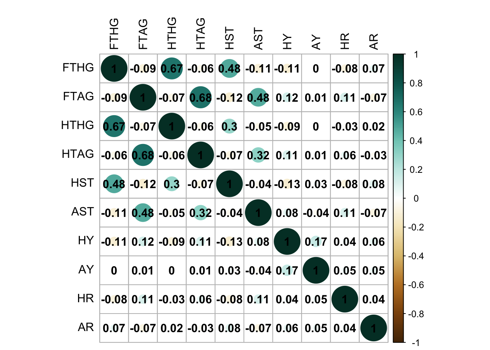
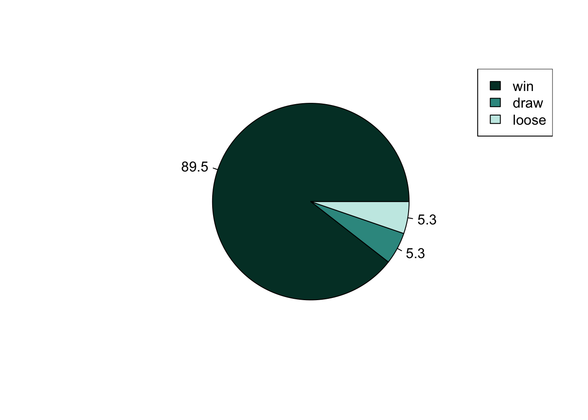
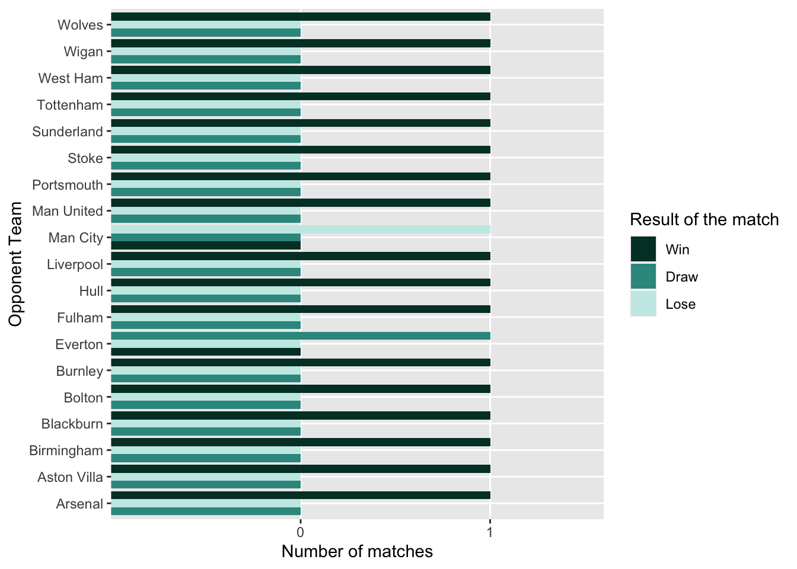
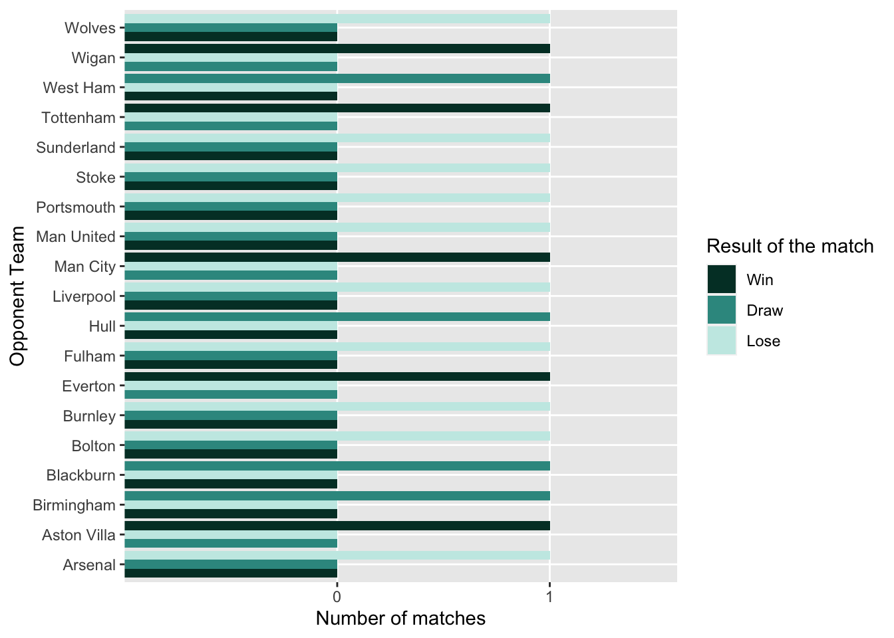
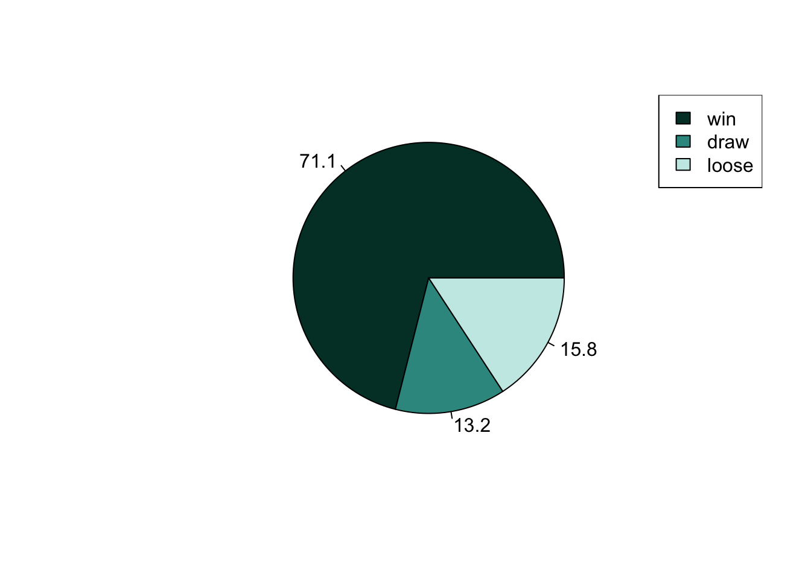
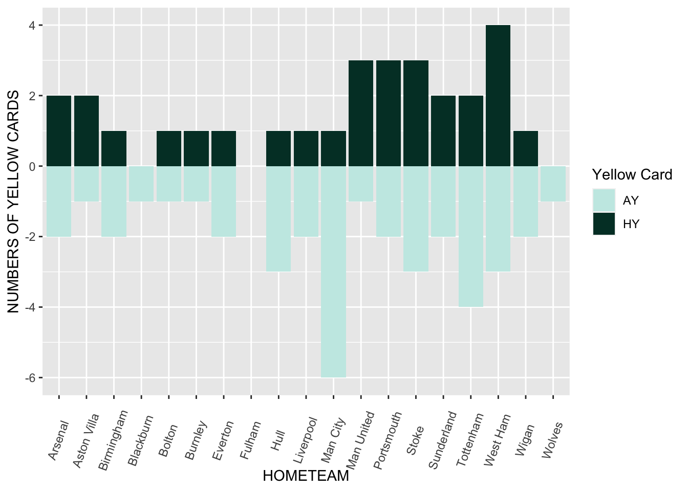
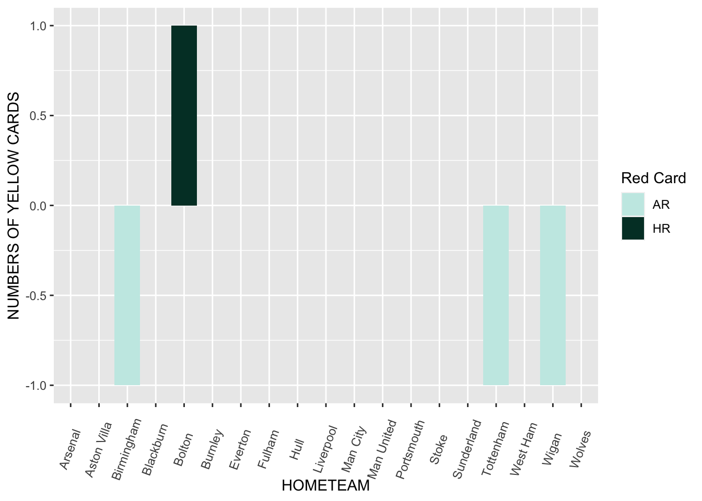
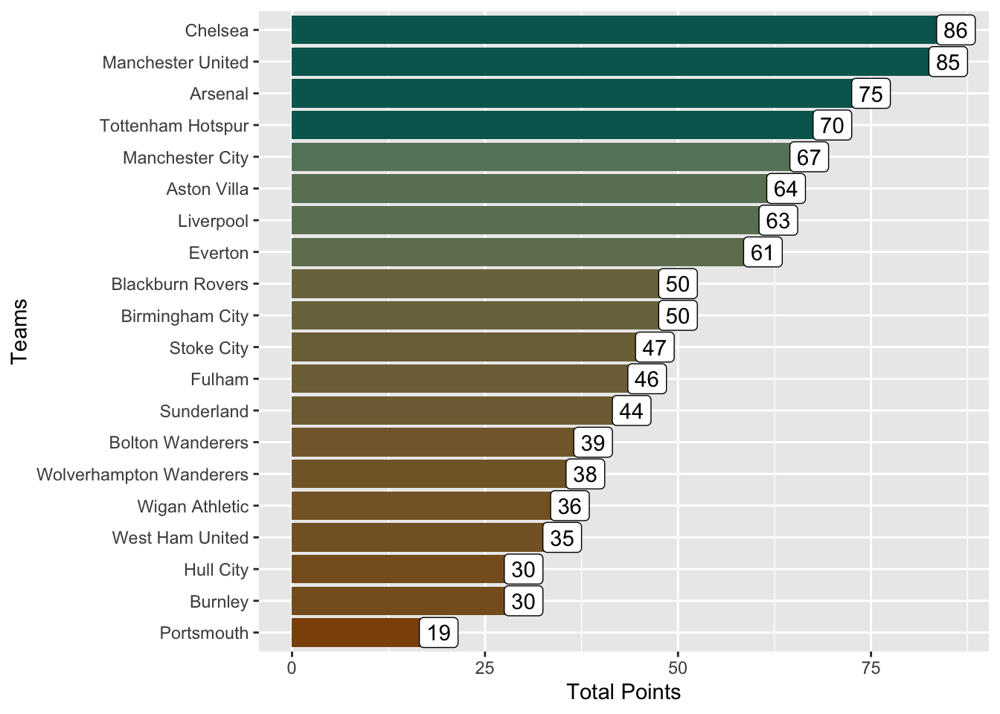
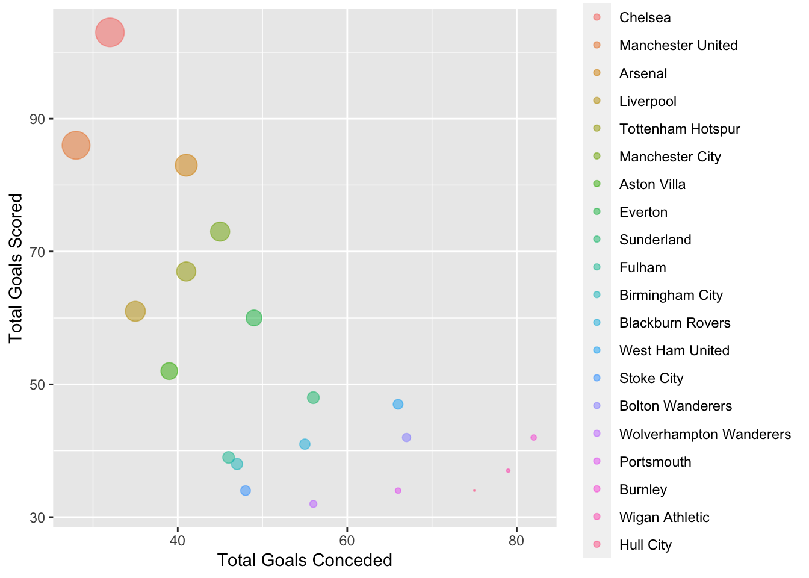
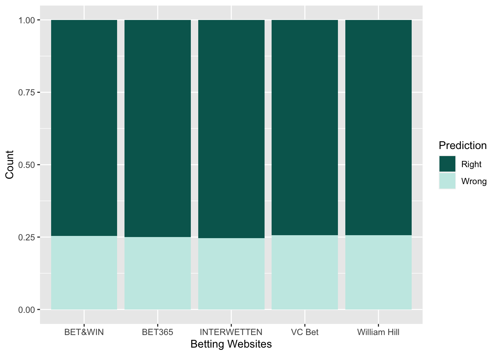

INTRODUCTION
Football is played by 250 million players in over 200 countries (most popular sport globally).
English Premier League (EPL) is the most popular football league and the most-watched sports league in the world.
The English Premier League is the world’s richest league in terms of money, which comes close to over 3 billion English Pounds Sterling.
Beamed to over 600 million homes in 212 countries, the EPL is the world’s most-watched football league with a potential global audience of nearly 5 billion people.
20 clubs are part of the league and they play a total of 38 matches in home and away match format.
ABOUT DATA
Data was collected through web scraping and csv files.
CSV files have been taken from https://www.football-data.co.uk/.
Data scrapping was done from https://www.espn.in/football/table/_/league/ENG.1/ .
Each CSV file contains 71 columns out of which 15 columns have been used .
Each scraped file contains 9 columns.
Abbreviations :
CSV Files:
FTHG - Full Time Home Team Goals
FTAG - Full Time Away Teams Goals
HTHG - Half Time Home Team Goals
HTAG - Half Time Away Team Goals
HST - Home Team Shots on Targets
AST - Away Team Shots on Targets
HY = Home Team Yellow cards
AY = Away Team Yellow cards
HR - Home Team Red cards
AR - Away Team Red cards
GP - Games Played
GD - Goal Difference
Scraped Files:
GP - Games played
L - Losses
GD - Goal Difference
W - Team’s current Win-Loss record
F - Goals For
PT - Points
D = Draws
A = Goals
Background Information
The Premier League is the highest level of the men’s English football league system.
There are 20 teams playing 38 matches and each team play all other 19 teams both home and away.
If a player is shown yellow card by the referee when he broke some rules,it means that if he do so again he will be ordered to leave the pitch.
If a player is shown red card , then it means that he has committed a serious foul and he has to leave the play immediately.
IMPORTANT QUESTIONS
Do we see any correlation between features corresponding to home team and away team?
When do teams have higher chances of winning ?
Do performance of the teams remain consistent throughout the years?
By what percentage betting companies predicted the result correctly?
VISUALIZATIONS
Correlation plot

We can see a very slight negative correlation between factors corresponding to home and away. This can be explained as follows: Suppose X(home team) and Y are playing a match and suppose X has done ample goals to take the lead. Then, there is a chance of slight psychological negativity in players of Y team which can be seen by negative correlation(though very less) between the teams.
Now let’s try to visualize important factors one by one.
Note : For visualizations, we are considering the performance of Chelsea (Winning team) in the year 2009-10.
Performance at home ground


Performance at away ground


Pie chart showing over all performance

You must have observed that Chelsea performed way better at it’s home ground as compared to at away ground. On the contrary, if we take a team X which is at the bottom of the points table, then we would notice that it performed better at away ground as compared to it’s performance at home ground.
Now, let’s try to visualize the number of yellow and red cards Chelsea gets as an away team.
Plot for Yellow Card

Plot for Red Card

We have done Match Wise Analysis of Chelsea using the above plots.
Overall Analysis of 2009-10 Premier League
Let’s try to analyse the season as a whole.
English Premier League Table 2009-10
Plot showing Points Table

Plot depicting Goals scored V/S Goals Conceded

After analyzing the points table, let’s move to predictions made by popular betting websites before the match commences.
Predictions made by different betting websites

Conclusion
The top 5 teams tend to win more matches at their home ground while the teams at the bottom of the points table tend to win more matches at the away ground.
The top 5 teams are more and less same over all the seasons while the teams at the bottom keeps on changing.
It seems that all the big 5 betting companies use the same algorithm to predict the odds and their prediction is correct with almost same probability over all the years.
Winning and losing in a game is unpredictable and it doesn’t depend on a single factor rather it depends on amalgam of many factors.